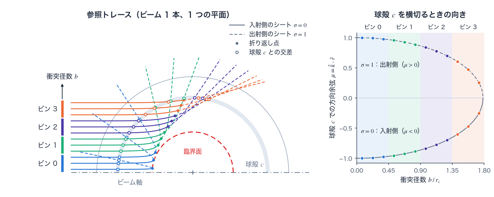
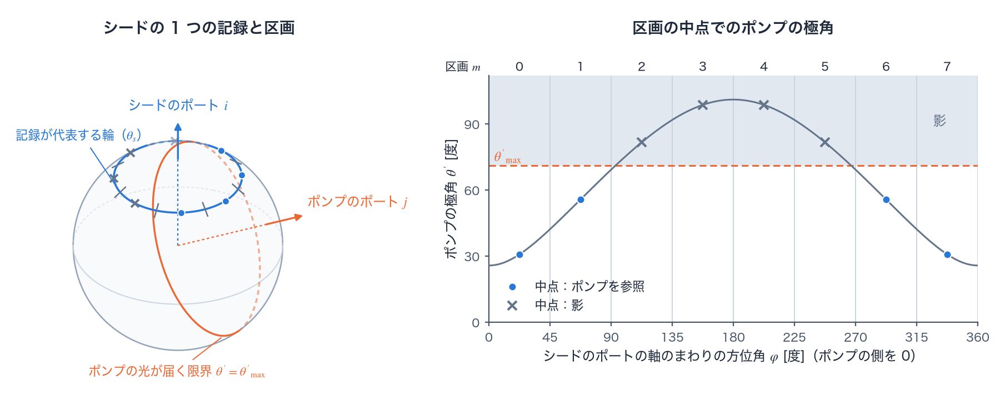
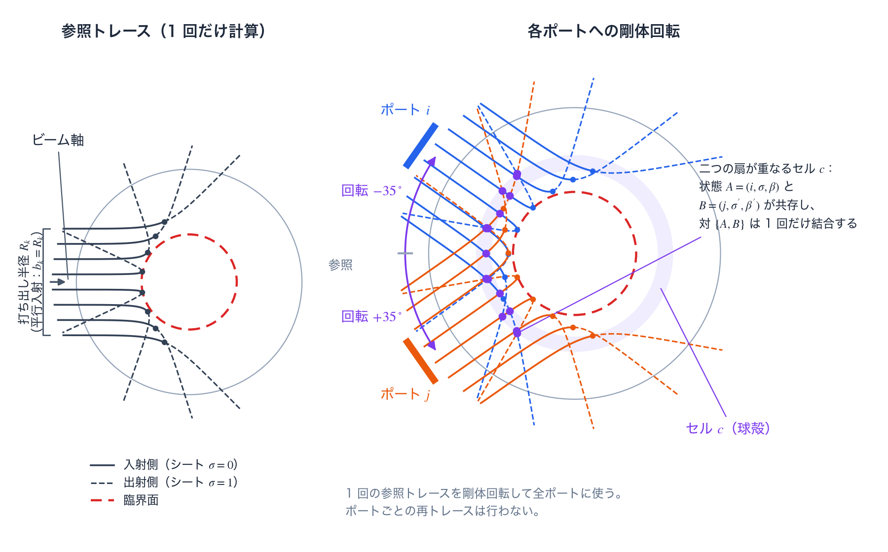
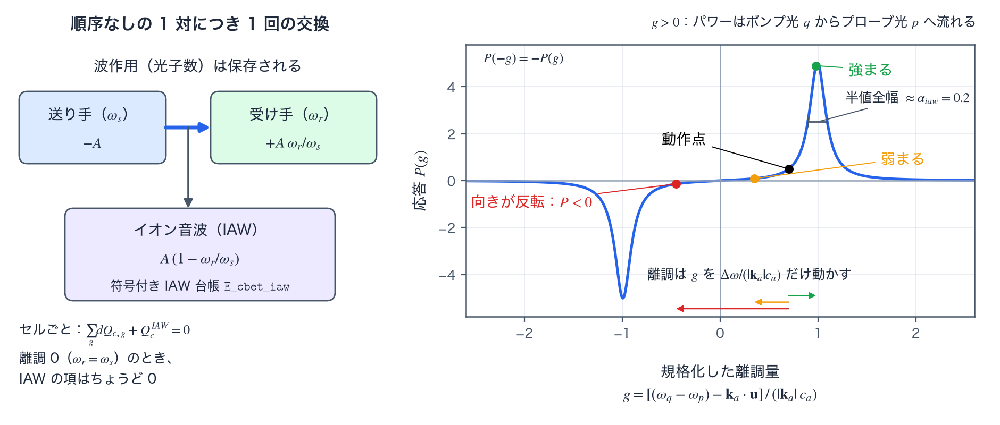

CBET（交差ビームエネルギー転送）reference
TENRYU の交差ビームエネルギー転送（cross-beam energy transfer、CBET）は、交差するレーザービームが駆動するイオン音波（ion-acoustic wave、IAW）を介して、光のパワーを再配分する。1D 球対称の port_section モードでは、代表となる 1 本のビームの屈折軌道を一度だけ追跡し、その位相空間（phase space）を実際のポート（port。照射装置でビームが標的へ入射する口）の方向へ剛体回転させる。これにより、球対称の流体計算を保ったまま、実際のポート配置、交差角、偏光平均（polarization average）、波長離調（wavelength detuning）、ポンプ光の減耗（pump depletion）をビーム対ごとに表現できる。交換は保存型であり、離調がある場合には、光の波作用（wave action）と、イオン音波へ渡したパワーを符号付きで記録する台帳まで閉じる。CBET は強減衰極限（strongly damped limit）の誘導ブリルアン散乱（stimulated Brillouin scattering、SBS）である。交差するビームのビートがポンデロモーティブ力（ponderomotive force）でイオン音波を駆動し、ドップラーシフトした共鳴が転送の大きさと向きを決める。この計算に固有の用語は用語の節で説明する。
物理機構
同じプラズマ体積で交差する二つの電磁波 \((\omega_p,\mathbf{k}_p)\) と \((\omega_q,\mathbf{k}_q)\) はビートを作る。そのポンデロモーティブ力は差周波数 \(\Delta\omega=\omega_q-\omega_p\) とビート波数ベクトル \(\mathbf{k}_a=\mathbf{k}_q-\mathbf{k}_p\) で振動する。この力がイオン密度の摂動、すなわちイオン音波を駆動する。密度の周期的な変調は屈折率の変調でもあるので、この音波は移動する回折格子として働き、各ビームはそこでブラッグ散乱を受ける。散乱波の向きと位相は相手ビームに重なるため、共鳴的に駆動された格子を介して、一方のビームから他方へエネルギーが可干渉に転送される。これは誘導ブリルアン散乱（SBS）の三波結合（three-wave coupling）であり、散乱の種（seed）が雑音ではなく相手のビームである点だけが通常の SBS と異なる。
速度 \(\mathbf{u}\) で流れるプラズマでは、イオンから見たビートはドップラーシフトし、固有応答は \(\Delta\omega-\mathbf{k}_a\cdot\mathbf{u}=\pm|\mathbf{k}_a|c_a\) で生じる。後で定義する規格化した離調量（normalized detuning）\(g\) はこの条件を無次元化したものであり、\(|g|=1\) が共鳴である。直接照射（direct drive）では次の二つの帰結が重要になる。ひとつは、同じ波長のビーム同士（\(\Delta\omega=0\)）であっても、射影した流速が音速に達する \(\mathbf{k}_a\cdot\mathbf{u}=\mp|\mathbf{k}_a|c_a\)、すなわち膨張コロナのマッハ 1 面では強く交換すること。もうひとつは、意図的に与えた波長離調 \(\Delta\lambda\) が応答曲線上の動作点を移すことである。後者が CBET を緩和する制御手段になる（図D）。
イオン音波の応答関数 \(P(g)\)（次節で定義）は \(g\) の奇関数なので、\(g\) の符号が転送の向きを決める。\(g_{pq}>0\) ならパワーはポンプ光 \(q\) からプローブ光（probe）\(p\) へ流れる。プラズマとともに動く系で青方偏移したビームが、赤方偏移したビームをポンプする、という関係である。光子の描像で見ると、この交換は波作用（光子数）を保存する。散乱された光子は個数を保ったまま \(\omega_s\) から \(\omega_r\) へ振動数が下がり、単位パワー当たりの Manley–Rowe 不足分 \(1-\omega_r/\omega_s\) がイオン音波へ沈着する。TENRYU はこの不足分を符号付き IAW 台帳へ厳密に記帳する（後述の波作用の節）。
TENRYU が評価するのは、Marozas らの線形・定常・強減衰の局所平面波極限 [1] — LLE（Laboratory for Laser Energetics、米国ロチェスター大学）の 2D 流体コード DRACO が使う形式 — である。イオン音波は局所的な駆動に従属している、すなわちセル間を伝播せずエネルギーを蓄えないと仮定する。この仮定により、交差ごとに局所的な利得係数を置ける。無次元の減衰率 \(\alpha_{iaw}=\nu_a/(|\mathbf{k}_a|c_a)\)（既定 0.2、LLE の 1D 流体コード LILAC の系譜に対する較正値）が共鳴の幅を決める。v1 は、モデル設計時に記録したスコープ決定として、\(|\Delta\omega|/\omega_0\) 次のイオン音波加熱補正、火面（caustic）補正、スペックル統計、偏光のダイナミクス、広帯域照射、運動論的な \(\nu_a(k)\) を意図的に対象外とした。
イオン音波利得モデル
プローブ光 \(p\) とポンプ光 \(q\) が同じプラズマセルを横切るとき、無次元利得 \(d\tau_{pq}\) を評価する。プローブ強度は \(dI_p=d\tau_{pq}\,I_p\) に従って増幅される。すなわち \(d\tau_{pq}\) は対数利得 \(d\ln I_p\) であり、線形（強減衰・定常）モデルではポンプ強度 \(I_q\) と経路長 \(ds\) に比例する。移行するパワー \(d\tau_{pq}\,I_p\) は両ビームの強度に比例し、この双線形性は後述の対交換式 \(\Delta P_{A\leftarrow B,c}=\chi\,L_{A,c}L_{B,c}/V_c\) の積 \(L_{A,c}L_{B,c}\) に対応する。役割を入れ替えた \(d\tau_{qp}\) は \(I_p\) に比例する。温度は内部で eV から erg へ変換し、式はガウス単位系の cgs で計算する。
$$ d\tau_{pq}=\eta_{pol}\frac{\lambda_0 e^2}{c^3m_e} \frac{\hat n_e}{1-\hat n_e} \frac{\langle Z\rangle}{\langle Z\rangle T_e+3T_i} P(g_{pq})I_q\,ds, \qquad \eta_{pol}=\frac{f_{cbet}}{4}(1+\cos^2\psi). $$ $$ g_{pq}=\frac{(\omega_q-\omega_p)-\mathbf{k}_a\!\cdot\!\mathbf{u}} {|\mathbf{k}_a|c_a},\qquad P(g)=\frac{g\alpha_{iaw}}{(g\alpha_{iaw})^2+(1-g^2)^2}, \qquad \mathbf{k}_a=\mathbf{k}_q-\mathbf{k}_p. $$- \(\eta_{pol}=\tfrac{f_{cbet}}{4}[1+(\hat k_q\cdot\hat k_p)^2]\) — 交差角 \(\psi\)（\(\cos\psi=\hat k_q\cdot\hat k_p\)）で交わる、非偏光かつ平滑化されたビームに対する偏光平均である。
f_cbetが実験較正を吸収する（DRACO では 1.5、TENRYU の既定は 1.0）。 - \(\lambda_0 e^2/(c^3 m_e)\) — 誘導ブリルアン散乱の結合定数である。式に \(\lambda_0\) が現れることは、長波長の光ほど強い CBET を受けるというよく知られた性質を表す。
- \(\hat n_e/(1-\hat n_e)\) — 密度結合 \(\propto\hat n_e\) と、ビーム対が臨界密度（critical density）へ近づくときの電磁波の誘電的な増強 \(1/(1-\hat n_e)\) の積である。
- \(\langle Z\rangle/(\langle Z\rangle T_e+3T_i)\) — \(\langle Z\rangle T_e+3T_i=\bar m_i c_a^2\) なので、音響的な硬さの逆数にあたる。高温で音速の大きいプラズマほど圧縮しにくく、応答が小さくなる。
- \(P(g)\) — 減衰 \(\alpha_{iaw}\) をもつ強制振動子としてのイオン音波の、吸収成分である。\(|g|\simeq 1\) 付近に極大をもち、\(g\) についての半値全幅は \(\simeq\alpha_{iaw}\)、そして \(g\) の奇関数である。
- \(I_q\,ds\) — 利得はポンプ強度と経路長に対して線形である。ポンプ光の減耗は後述の外側反復を通じてのみ入るため、1 回ごとの評価は線形のままである。
すべてガウス単位系の cgs で評価し、温度は eV から変換した erg を使う。\(n_{crit}=m_e\omega_0^2/(4\pi e^2)\) は 351 nm で \(9.06\times10^{21}\,\mathrm{cm^{-3}}\)、527 nm で \(4.02\times10^{21}\,\mathrm{cm^{-3}}\) となり、電子に関する定数はレーザーモジュールと共有する。利得式に現れる \(\hat n_e=n_e/n_{crit}\) は、この臨界密度で規格化した電子密度である。\(c_a=[(\langle Z\rangle T_e+3T_i)/\bar m_i]^{1/2}\)、\(\bar m_i=A_{eff}m_p\) であり、1 温度モデルの計算では \(T_i=T_e\) とする。
この計算で使う用語
1D の流体計算が持つのは半径方向の分布だけだが、CBET の利得は、二つのビームの光がセルの中で交わる角度 \(\psi\) とビート波数 \(|\mathbf{k}_a|\) に強く依存する（利得モデル）。TENRYU はこの向きの情報を、光線の経路を以下の単位に分けて保持する。ここに挙げる用語は、CBET の光線計算、とくに TENRYU の実装に固有の意味で使うので、まとめて定義する。
ポート、参照トレース、交差
ポート（port）は、照射装置でビームが標的へ入射する口と、その方向である。Laser.port_configuration のポート表が、ポートごとの方向、パワーの重み、波長のずれ \(\Delta\lambda\) などを与える。Studio のプリセットは、GXII を 12、OMEGA を 60、NIF を 192 のポートとして展開する。
参照トレース（reference trace）は、代表とする 1 本のビームの光線を、標的中心とビーム軸を含む 1 つの平面の中で追跡した結果である（図A 左）。球対称のプラズマでは、衝突径数（次項）が等しい光線どうしは、標的中心のまわりの回転で互いに重なる。そのため、この 1 回の追跡を各ポートの方向へ回転すれば、すべてのポートの光線の経路が得られる。Follett ら [2] は、衝突径数を変えて並べたこのような光線の組を sector と呼ぶ。参照トレースの各光線は、ビーム軸のまわりの 1 つの輪（開口を分けた環）を代表する。
交差（crossing）は、この頁では、1 本の光線が 1 つのセル（1D では球殻）を 1 回通過することと、その通過について保存する記録を指す（記録の中身はステップ 1）。ビームどうしが交わることではない。二つのビームの光の重なりは、同じセルに異なる状態（後述）の交差が共存することとして表す。折り返す光線は、折り返し点より外側の球殻を、入射側と出射側で 1 回ずつ通過する。
port_section は、実際のポート配置と、Follett ら [2] の区画光線追跡（section ray tracing）の考え方を使う CBET の幾何の扱いで、参照トレースを各ポートへ回転し、状態の対ごとに交換を評価する。既定値の geometry_mode="legacy"（以下、従来の縮約）はポート配置を使わず、二つの光線のあいだの方位角について平均する（次節）。Studio が書き出すのは port_section だけである。
衝突径数と衝突径数ビン
衝突径数（impact parameter）は、光線を屈折のない直線とみなしたときの、その直線と標的中心との距離である。真空から入射する光線では、光路に沿って保存される Bouguer 不変量 \(B=n_{\rm refr}r\sin\alpha\)（\(\alpha\) は動径方向と光線のなす角。レーザー参照）が衝突径数に等しい。したがってプラズマの分布が同じなら、衝突径数だけで、光線が折り返す半径と、各球殻を横切る角度が決まる。衝突径数の小さい光線はほぼ動径方向に深くまで入り、大きい光線は外側で折り返す。
1D のビームは、打ち出し面（光線を打ち出す、ビーム軸に直交する面）上の開口を同心の環に分け、環 \(k=0,1,\dots,N_{ray}-1\) ごとに 1 本の光線を、環の中心の半径 \(R_k=(k+1/2)\Delta R\)（打ち出し半径）の点から、ビーム軸上の焦点を通る直線に沿って打ち出す（\(N_{ray}\) は Laser.rays_per_beam、\(\Delta R\) は開口の半径を \(N_{ray}\) で割った値。レーザーの用語の節参照）。参照トレースの光線は、レーザーの 1D の光線追跡と同じ光線である。光線の直線と標的中心との距離である衝突径数は \(b_k=|z_f|R_k/\sqrt{R_k^2+(Z_{init}-z_f)^2}\) で、打ち出し半径 \(R_k\) とは一般に等しくない（\(z_f\) は焦点の標的中心からの位置、\(Z_{init}\) は打ち出し面の位置。レーザー参照）。
焦点が標的中心にないとき（\(z_f\neq0\)）、\(b_k\) は \(k\) とともに単調に増えるので、光線の番号 \(k\) の順は衝突径数の順に一致する。焦点が標的中心にあるとき（\(z_f=0\)）は、すべての光線が標的中心を通るので、すべての環で \(b_k=0\) となり、\(k\) の順は打ち出し半径の順（ビーム軸となす角の順）を表すだけで、衝突径数の順ではない。port-section の復元は、\(b_k\) ではなく打ち出し半径 \(R_k\) を光線のビーム軸からの距離として使い、経路の最初の節点（半径 \(r_0\)）の極角を \(\theta_0=\arcsin(R_k/r_0)\) と置く。
衝突径数ビン（impact-parameter bin）は、ビームの光線を番号 \(k\) の順に、本数が等しくなるように \(N_{bin}\)（Laser.cbet.n_impact_bins）組に分けたものである。光線 \(k\) はビン \(a=\lfloor kN_{bin}/N_{ray}\rfloor\) に属し、ビンは番号 \(k\) だけで決まる。ビン 0 はビーム軸の近くを通る光線、ビン \(N_{bin}-1\) は開口の縁を通る光線であり、\(N_{ray}\) が \(N_{bin}\) で割り切れるとき、各ビンは開口を等しい幅の帯に分けたものに当たる（図A 左）。
光線を衝突径数で分ける理由は二つある。第一に、CBET の結合は二つのビームの光が交わる角度で決まるが、同じ球殻を通る光線でも、衝突径数が違えば向きが違う。1 本のビームの光をセルごとに 1 つの量へまとめると、この向きの違いが失われる。同じビンの光線は各球殻をほぼ同じ向きで横切る（図A 右）ので、ビンに分けると、ビームの向きの広がりを \(N_{bin}\) 段階の分解能で残せる。第二に、セルでの交換は後述の状態ごとに 1 つの量として求め、その状態の交差へ、パワーと路程の積の割合で配る（ステップ 5）。したがってビンは、交換を光線ごとに区別できる最も細かい単位でもある。ビンを増やすと分解能は上がるが、状態の数と対の数が増える（集計群と状態）。Studio の既定は 4、デッキで指定しないときの既定は 16 である。

シート
シート（sheet）は、1 本のビームの光線の族のうち、空間の各点を高々 1 本の光線が通る部分である。光線の位置と波数ベクトルの組 \((\mathbf{x},\mathbf{k})\) の空間（位相空間）で見ると、ビームの光線は 1 枚の面をなす。その面を位置の空間へ射影したときに 1 対 1 に写る部分が 1 枚のシートである（Follett ら [2]）。ある点でビームが作る場はシートごとの寄与の和になるので、CBET ではシートを別々の相手として扱う。
球対称で単調な密度分布では、ビームは、入っていく光線のシートと、折り返して出ていく光線のシートの 2 枚に分かれる。同じ点を、入射側の光線と出射側の光線が異なる向きで通る（図A）。2 枚の厳密な境目は火面（隣り合う光線が交わり、光線束の断面積が 0 になる面）であり、光線が折り返す点（半径が最小になる点）とは一般に一致しない。TENRYU は各光線の経路を折り返し点で分け、入射側をシート \(\sigma=0\)、出射側をシート \(\sigma=1\) とする。折り返し点と火面のあいだでは光線束が退化して場を正しく再構成できないので、この区間の交差は場の評価から除く（port-section の節）。火面の近くでは光線から求めた場の振幅が発散するため、その振幅を線形な密度勾配での解析解（エアリー関数）の最大値で抑える扱いが広く使われ、field limiter と呼ばれる [6]。LILAC もこの扱いを使う [2]。TENRYU の現行版（v1）は、これに当たる処理として、この区間の交差を場の評価から除く。
集計群と状態
集計群（tally group）は、光線の交差をセルごとに集計するときの単位で、ビーム \(b\)、シート \(\sigma\)、衝突径数ビン \(a\) の組である（従来の縮約で使う。リポジトリの docs/NUMERICS.md §5.10.2 では角度グループ、angle group と呼ぶ）。同じ集計群の交差は、セルごとに 1 つのパワーの線積分 \(L_{g,c}\) と 1 つのパワー重み付き方向余弦 \(\bar\mu_{g,c}\) にまとめる（次節）。
状態（state）は、port_section での集計の単位で、集計群のビームを実際のポートに置き換えた組 \(A=(i,\sigma,\beta)\)（ポート \(i\)、シート \(\sigma\)、衝突径数ビン \(\beta\)）である。参照トレースは代表のビーム 1 本の記録しか持たないので、その記録を各ポートのパワーの重みで複製して状態をつくる。この複製を指して、展開後の状態（expanded state）とも呼ぶ。状態の数は \(G=N_{port}\times2\times N_{bin}\) で、CBET の交換は、セルごとに状態の順序なしの対について 1 回ずつ評価する。対の数は \(G(G-1)/2\) で、v1 は 65536 を上限とする。たとえば GXII（12 ポート）と Studio の既定 \(N_{bin}=4\) では \(G=96\)、対は 4560 である。
区画、シードとポンプ、影
シード（seed）は、状態の対 \(\{A,B\}\) の結合係数（ステップ 3）を求めるとき、セルの中にある自分の交差の記録（位置と向き）を標本点として出す側の状態である。TENRYU は番号の小さい状態をシードにとり、得た結合係数を両方向の交換に使う。この役割の区別は計算の手順のためのもので、パワーがどちらへ流れるかは \(g\) の符号が決める（物理機構）。
ポンプ（pump）は、同じ対のもう一方の状態で、シードの標本点での強度と向きを参照トレースの表から補間して与える側である。ポンプの強度と向きは、そのシートのすべての光線（すべてのビン）の交差から補間するので、結合係数はポンプの衝突径数ビンに依らず、ポンプのビンは交換の式の \(L_{B,c}\) を通じてだけ効く。
区画（section）は、シードのポートの軸のまわりの方位角 \([0,2\pi)\) を Laser.cbet.n_section_phi 個に等分した扇形である。参照トレースの交差は 1 つの平面の中で求めるが、ビームは自分の軸のまわりで軸対称なので、1 つの交差の記録は、その軸のまわりの輪の上のすべての点を代表する。ポンプは別の方向から入射するので、ポンプの強度と向きは、この輪の上の位置によって変わる。そこで輪を区画に分け、各区画の中点をポンプのポートの座標系へ移してポンプの軸から測った極角 \(\theta'\) を求め、その極角でポンプの表を補間して、結合係数を区画について平均する（図B）。区画は状態に含めない。交換は状態の対ごとに 1 つで、区画は結合係数の平均の中だけで使う。Follett ら [2] の区画光線追跡は、光線の組をビーム軸のまわりの方位角を変えて複製し、方位角の違いを扱う。TENRYU はこの考え方を、全方位角を等分した区画の中点に用いる。
影（shadow）は、ポンプのそのシートの光線が届かない位置である。区画の中点の極角 \(\theta'\) が、同じ球殻・同じシートでポンプの参照トレースの光線が届く最大の極角 \(\theta'_{\max}\) を越えると、その点にはポンプの光が来ない（Follett ら [2] の言う、火面の裏の影の領域）。このような標本点は、結合係数の重み付き平均の分子からも分母からも除く。

n_section_phi = 8）。左：シードの 1 つの交差の記録（光線 \(k=7\)。シードのポートの軸から測った極角 \(\theta_s\)）が代表する輪と、それを 8 つに分けた区画の中点。ポンプのポートは、シードのポートから正二十面体の隣り合う頂点のなす角（63.4°）だけ離して置いた。橙の円はポンプの軸から極角 \(\theta'_{\max}\) の位置を結んだもので、その外側にはポンプの入射側のシートの光線が届かない。右：各区画の中点でのポンプの極角 \(\theta'\)。\(\theta'_{\max}\) を越える中点（×）は影であり、結合係数の平均から除く。1D 球対称縮約 — 集計群と方位角求積
従来の縮約では、追跡した光線の交差を集計群（ビーム \(b\)、シート \(\sigma\)、衝突径数ビン \(a\) の組。用語）ごとにまとめる。シートは区間の向きで判定し、\(\sigma=\mathbb{1}[\mu_{seg}>0]\)（出射側で 1）とする。集計群の添字は \(g=b\,(2N_{bin})+\sigma N_{bin}+a\) とする — この整理番号としての \(g\) は、上の利得モデルの規格化離調 \(g\) とは無関係である。区間の方向余弦は、屈折軌道に沿う厳密な経路平均 \(\mu_{seg}=(r_{stop}-r_{old})/\Delta s\) である。セル \(c\) での集計量は、パワーの線積分 \(L_{g,c}=\sum P\Delta s\)、強度 \(I_{g,c}=L_{g,c}/V_c\)、パワー重み付き方向余弦 \(\bar\mu_{g,c}=\sum P\Delta s\mu/L_{g,c}\) であり、\(V_c\) はトレースを取った時刻のラグランジュセル体積である。
$$ \cos\psi(\varphi)=\bar\mu_p\bar\mu_q+s_ps_q\cos\varphi,\quad s=\sqrt{1-\bar\mu^2},\qquad |\mathbf{k}_a|(\varphi)=\bar k\sqrt{2(1-\cos\psi)},\quad \bar k=n_r\omega_0/c, $$ $$ \mathbf{k}_a\cdot\mathbf{u}=\bar k\,u_r(\bar\mu_q-\bar\mu_p)\ \ (\varphi\text{-independent}),\qquad \langle P\cdot pol\rangle_\varphi=\frac{1}{N_\varphi}\sum_k\frac{1+\cos^2\psi(\varphi_k)}{4}\,P(g(\varphi_k)). $$ここで \(\varphi\) は二つの光線面（光線の軌道と標的中心を含む平面。球対称の場では光線はこの平面から出ない）のあいだの相対方位角、\(s_p,s_q\) は集計方向余弦 \(\bar\mu_p,\bar\mu_q\) の正弦、\(\bar k=n_r\omega_0/c\) は局所の光波数、\(\langle P\cdot pol\rangle_\varphi\) は対の結合に入る、応答×偏光因子の方位角中点平均である。
1D の流体計算は二つの光線面のあいだの相対方位角 \(\varphi\) を解像しないため、対の運動学は \(\varphi\) についての中点則（midpoint rule）で平均する。平均するのは \(P(g)\) そのものであり、非線形性を無視した \(P(\langle g\rangle)\) ではない。半径方向の流れは \(\mathbf{k}_a\cdot\mathbf{u}=\bar k u_r(\bar\mu_q-\bar\mu_p)\) を通じて入り、この式は厳密で \(\varphi\) に依存しない。共鳴の半値全幅は \(\simeq\alpha_{iaw}\) なので、中点則は \(\max_k|g(\varphi_{k+1})-g(\varphi_k)|\lesssim\alpha_{iaw}/4\) を満たすかぎり共鳴を解像できる。alpha_iaw を大幅に小さくする設定では、より大きな n_phi（方位角の中点の数）が必要である。
ne_frac_cutoff 以上（既定 0.95）の密度をもつセル、ボイド（void）セル（外側のボイドセル。ボイド材料参照）、状態量 \(\rho,\bar Z,A_{eff},T_e,T_i,u_r,V_c\) のいずれかが有限でないセルは除外し、\(u_r\) にはセル平均した節点速度を使う。\(|\mathbf{k}_a|/\bar k<\)k_a_floor となる節点はビート波を持たないため、寄与は 0 である。利得の前置因子と \(\bar k\) は、逆制動輻射吸収（inverse bremsstrahlung absorption、IB）と同じ absorption.eps_n で \(1-\hat n\) に下限を課す。設定検証が ne_frac_cutoff \(\le 1-\)eps_n を強制するため、有効な密度帯の内側でこの下限が利得を気付かぬうちに飽和させることはない。port_section モードは、この解像されない方位角平均を、参照トレースの各ポートへの回転と、区画についての平均（用語）で置き換える。
単一トレースからの port-section 再構成
参照トレースは（図C）、セルを横切るごとに半径、方向余弦 \(\mu\)、路程 \(ds\)、入射・出射のシート、衝突径数ビンを保持する。軌道に沿う極角は \(\sqrt{1-\mu^2}/r\) をシンプソン則（Simpson's rule）で累積して復元し、隣り合う光線の角度差から有限の光線束断面積を作る。シートは折り返し点で切り替える。光線族の位相空間的な折り目は火面（光線束の断面積が消える包絡面）であり、折り返し点とは一般に一致しない。折り返し点と火面のあいだの帯では光線束が退化して場の再構成が信頼できないため、この区間の交差は場の評価から除外する（シートの項の field limiter に当たる処理）。シードの標本点をポンプのポートの座標系へ逆回転した位置が、ポンプの参照トレースの光線が届く最大の極角を越える影の領域（区画と影の項）に入る場合は、その標本を、結合係数の重み付き平均（次節の式）の分子と分母の双方から除く。

展開後の状態（用語）は \(A=(i,\sigma,\beta)\)、すなわちポート、シート、衝突径数ビンの組である。区画 \(m\) は状態に含めず、結合係数（次節の式）の中で和をとる。単一の参照記録を各ポートのパワー重みで複製し、正準なポート ID 順（ポート表の port_id の昇順）で集計し、伝播する。この順に固定するので、ポート表の行の並べ方を入れ替えても結果はビット単位で変わらない。各セルにおける順序なしの対 \(\{A,B\}\) は一度だけ評価し、同じ量を符号を反転して両方の状態へ適用する。ここに \(N(N-1)/2\) のような規格化は入らない。ひとつの物理ビームを同方向・同波長の二つへ分割しても、重みと強度の和が等しければ結果が変わらない——このビーム分割不変性（beam-splitting invariance）が上の規約を固定する。同一ポートの異なるシート同士の組合せも正当な対である。
参照トレースの光線に沿う極角は、記録区間ごとに \(\sqrt{1-\mu^2}/r\) をシンプソン則で累積して復元し、隣り合う光線が張る有限の束断面積には Follett らの光線束断面積の離散形（文献 [2] の式 (10)）を使う。ポンプの参照では、シードの各標本点をポンプ側ポートの座標系へ逆回転し（同じく文献 [2] の式 (21) の回転）、ポンプの (球殻, シート, \(\theta'\)) の表を線形補間する。この表は、球殻とシートごとに参照トレースの交差を極角の順に並べたもので、すべての衝突径数ビンの交差を含む。影の標本は分子と分母の双方から除外する一方、下限を下回る \(|\mathbf{k}_a|\) については分母を残すため、対を再規格化せずに希釈する扱いになる。v1 は展開後の対の総数を 65536 以下に制限する。GXII 規模のポート構成は現時点で実行でき、OMEGA/NIF 規模は文書化済みの拡張項目である。
1 回の CBET 求解の手順
記録する。 CBET を有効にすると光線追跡カーネルは記録モード（record mode）で動き、光線ごとに、セルを横切るたびに \(\{c,\mu,\Delta s,S,w\}\) という項目をひとつ保存する。\(S\) はその交差のなかで合計した逆制動輻射吸収の光学的厚さ（optical depth）で、光線の行進では台形則（trapezoidal rule）で、1D の既定の特性曲線積分（characteristic integration）では求積で求める（レーザー参照）。\(w\) はこの IB のみのトレースにおける交差時点の光線パワーで、ステップ 5 の最初の反復の集計の種になる。臨界層での終端処理は \(\Delta s=0,\ S=\tau_{tail}\)（臨界面近傍の裾を解析的に閉じた残りの光学的厚さ — レーザー参照）をもつ末尾の記録として保存する。容量の超過は即時エラーとする。経路を黙って打ち切ると、途中までは集計に寄与しながら、逆制動輻射で吸収されるはずの分が気付かれないまま「未吸収」へ移ってしまうためである。
集計する。 集計群（
port_sectionでは状態）とセルごとの \(L,\bar\mu,\Delta s^{max}\) を、整列した区間上での固定順序の逐次和として累積する。この求解のどこにも浮動小数点の atomic 演算はなく、同じビルドと同じデバイスであれば、実行のたびにビット単位で同じ結果が得られる。-
結合係数を作る。 結合係数の表は、セルと順序なし対ごとに一度ずつ評価する。
$$ \chi^{ps}_{c,\{A,B\}}=\chi_{pref}(c) \frac{\sum_x\sum_m \hat w_A(x)\hat I_B(x,m)\eta_{pol}P(g)} {\sum_x\sum_m \hat w_A(x)\hat I_B(x,m)},\qquad \Delta P_{A\leftarrow B,c}=\chi^{ps}_{c,\{A,B\}}\frac{L_{A,c}L_{B,c}}{V_c}. $$port_sectionでは反復に入る前の一度だけである：幾何が位相空間の表から得られ、反復中の \(L\) に依存しないため、\(\chi^{ps}\) は反復を通じて不変である。一方、従来の縮約ではパワー重み付き方向 \(\bar\mu\) が \(L\) とともに動くため、ステップ 5 の反復ごとに \(\chi\) を評価し直す。\(\chi_{pref}(c)\) はセルの状態だけで決まる利得の前置因子（利得式の結合定数 \(\lambda_0 e^2/(c^3 m_e)\)、密度因子 \(\hat n_e/(1-\hat n_e)\)、温度因子をまとめたもの）、\(x\) はシードの状態 \(A\) がそのセルに持つ交差の記録、\(m\) は区画、\(\hat w_A(x)\) はシード側に記録した正規化パワー重み（和が 1）、\(\hat I_B(x,m)\) は記録 \(x\) が代表する輪の上の区画 \(m\) の中点をポンプのポートの座標系へ逆回転し、ポンプの表を線形補間して求めたポンプ強度である（区画、シードとポンプ、影）。GPU の本番の経路は、(セル, シードの状態, ポンプのポート) の組ごとに 1 つのワープ（warp。32 スレッドの組）で和を作り、浮動小数点の atomic 演算を使わない。結合係数はポンプの衝突径数ビンに依らないので、ポンプのポートの 2 枚のシートについて作った和を、そのポートのすべての状態との対に使える。各 \((cell,pair)\) を 1 スレッドで処理する参照カーネルも試験用に残してあり、両者の結合係数はビット単位で一致する。GPU 側の作業領域は、ポート座標系、周波数、対の表、デバイスからの読み戻し用の容量を保持したまま求解のあいだ再利用され、ホスト側の参照実装は許容誤差の検証用に残してある。反対称性が成り立つ機構は次のとおりである。\(g_{qp}=-g_{pq}\) は浮動小数点演算でも厳密に成立し、\(P(g)\) は浮動小数点上でも奇関数である。さらに実装は \(\chi\) を対ごとに一度だけ評価し、適用する積を両側で同じ正準的な (min,max) の被演算子順序で丸める。このため対どうしの交換は、丸め誤差の範囲で近いというだけでなく、構成上ビット単位で反対称である。
上限を掛ける。 上限処理は、群ごとの総損失 \(\ell_{g,c}\) に対する 2 段階の流束制限（flux limiting）である。結合が強いときに供給側（パワーを失う側、donor）が負にならないよう、各群の総損失から \(f_g=\min[1,\theta L_g/(\Delta s_g^{max}\ell_g)]\) を作り（\(\theta\) は
theta_cap、\(\Delta s_g^{max}\) はそのセル内でその群が 1 回の交差で通る最長の路程 — 上限がセル総量ではなく交差ごとに掛かる理由である）、対には \(\min(f_A,f_B)\) を掛ける。同じ係数を両方向へ掛けるため反対称性は壊れず、1 回の交差あたりの相対損失をtheta_cap以下に抑える。-
伝播させ、反復する。 この求解が自己無撞着にしなければならない量 — そして収束判定の対象 — は、ビームどうしが互いに見せる強度場である。離散的には、ステップ 2 のセル・集計群ごとのパワー線積分 \(L_{g,c}\) がそれに当たる。各対の交換には両者の局所パワーが要るが、そのパワー自身が、逆制動輻射吸収と、各光線の上流で起きたすべての CBET 交換をすでに含んでいなければならない。TENRYU はこの循環依存を、\(L\) に対するピカール反復（Picard iteration、不動点反復）で、緩和を掛けずに閉じる。反復 \(m\) は次を順に行う。
- 集計。 反復 \(m-1\) の光線パワーから \(L^{(m)}_{g,c}\) を作る。最初の反復は記録トレース、すなわち CBET を入れる前の逆制動輻射吸収だけの場を集計する。
- 交換の評価。 その集計から各対の \(\Delta P_{A\leftarrow B,c}=\chi\,L^{(m)}_AL^{(m)}_B/V_c\) を評価する — ポンプ光の減耗はここで効く。前の反復で弱められた相手は、小さくなった \(L\) しか差し出さないからである。ステップ 4 の供給側の上限を掛け直し、対の交換をセルごとの純台帳 \(dQ_{g,c}=\sum_q\Delta P^{final}\) へまとめる。
port_sectionでは幾何因子 \(\chi^{ps}\) が反復不変だが、従来の縮約ではパワー重み付き方向 \(\bar\mu\) が \(L\) とともに動くため、ここで \(\chi\) を評価し直す。 - 収束判定。 集計そのものの相対 L1 変化 \(\sum_{g,c}|L^{(m)}_{g,c}-L^{(m-1)}_{g,c}|\,\big/\sum_{g,c}L^{(m-1)}_{g,c}\) が
tol未満（既定 1e-3、max_iters50）なら収束である。 - 再伝播。 未収束なら、すべての光線を発射時のパワー \(P_0\) から — 前の反復の終端からではなく — もう一度伝播させ、各交差で「逆制動輻射吸収の半分 → そのセルの純交換の自分の取り分 → 吸収の残り半分」を適用する。
交差が受け取る \(dQ_{g,c}\) の取り分は、前の反復の集計（前の世代、generation）に占めるその交差の割合 \(w^{(m-1)}\Delta s/L^{(m-1)}_{g,c}\) である。この割合は構成上ちょうど 1 に足し上がる（\(\sum_j w_j\Delta s_j=L\)）ため、光線に沿って適用したパワーは台帳 \(dQ\) へ厳密に集約される。緩和係数や調整のつまみはない。各反復は、最新の交換場のもとで完全に一貫した伝播が生む強度場で、前の場を置き換えるだけである — 純粋なピカール代入で、1 回の反復が動ける幅はステップ 4 の上限が抑える。CBET を適用したあとのパワーが、次の反復の集計重み（世代 \(m\)）になる。最終の掃引（final pass。収束後に沈着と未吸収パワーを確定する最後の伝播）では、世代をそろえた \(dQ\) と \(w\) で沈着を行う。世代がずれると保存が黙って破れるため、解析解のあるスラブ問題で検査している。
正値性と台帳。 反復の途中でパワーが負になったときに 0 へ戻す処理（clamp）は、正値への射影として扱い、発生回数だけを数える。物理的な判定基準は、最終掃引で clamp が注入するパワーが 0 であることである。続いて台帳 \(P_{in}=P_{dep}+P_{unabs}+\Sigma_{applied}\) を監査する。\(\Sigma_{applied}\) は適用した対交換の総和で、交換は対ごとに厳密に反対称なので理想的には 0 — 実際には浮動小数点の丸めが累積する \(O(N\varepsilon)\) の水準で閉じる（相対値の実測は \(\lesssim10^{-12}\)）。CBET が物質を直接加熱することはなく、エネルギーを沈着するのは逆制動輻射吸収だけである。交換されるパワーは、どの光線がパワーを運ぶかを付け替えるにすぎない。沈着量と未吸収パワーは、通常どおりビームごとの固定順序の総和へ流れる。
収束後の最終掃引は、セルへの沈着量と未吸収パワーを既存の台帳へ加え、交換後のパワーを元の光線軌道へ書き戻す。そのため可視化でも、どの区間で増減したかを追跡できる。光線追跡を省略して前回のトレースを再利用するとき（レーザーの再利用キャッシュ、Laser.raytrace_skip）に行う、ビームごとのパワーの拡大縮小は、線形な逆制動輻射吸収には厳密だが、非線形な CBET には厳密ではない。このため CBET を有効にした場合は、いずれかのビームのパワーがキャッシュを取ったときから 1% を超えて変化した時点でも再トレースを起動する。
波長離調と波作用の台帳
各ポートは \(\Delta\lambda_b\) をもち、\(\omega_b=2\pi c/(\lambda_0+\Delta\lambda_b)\) として共鳴条件の \(\Delta\omega\) に入る。v1 では軌道、\(|\mathbf{k}|\)、\(n_{crit}\) を共通の \(\lambda_0\) で凍結し、離調は共鳴条件にのみ作用させる。凍結される量のずれは相対で \(\Delta\lambda/\lambda_0\) のオーダーに留まり（\(n_{crit}\propto\lambda^{-2}\) の移動は 351 nm・0.1 nm の分割で \(2\Delta\lambda/\lambda_0\approx6\times10^{-4}\)）、サブナノメートルの GXII/OMEGA 級の離調はこの近似の内側に収まる。数 Å の NIF 級分割が後述の記録済みの注意点である。Studio の「ポート波長分割」の設定は、正準なポート ID 順に \(+\Delta\lambda/2\) と \(-\Delta\lambda/2\) を交互に割り当て、二色に分けた構成を簡潔に作る。

周波数が異なる場合、パワーを等量やり取りすると光子を生成してしまう。三波過程で保存されるのは波作用、すなわち光子数（Manley–Rowe 関係）である。送り手が \(\omega_s\) でパワー \(A\) を失うと、受け手は \(\omega_r\) で \(A(\omega_r/\omega_s)\) を受け取り、その差 \(A(1-\omega_r/\omega_s)\) がイオン音波へ供給されるパワーになる。TENRYU はこれを交換ごとに一度、符号付き台帳 E_cbet_iaw へ記帳する。各セルでは \(\sum_g dQ_{c,g}+Q_c^{IAW}=0\) を検査する。離調が 0 のときは、有限の周波数どうしの比 \(\omega/\omega\) が厳密に 1 になるため、受け手の利得は離調なしの経路とビット単位で一致し、IAW 項はちょうど 0.0 になる。
namelist による制御
以下は、Studio が生成する port_section 入力デッキの主要キーである。Studio が従来形式の CBET デッキを生成することはない。表の値は、低レベルのパーサがもつ一般的な既定値ではなく、Studio が書き出す既定値である。
| キー | 既定値 | 用途 |
|---|---|---|
Laser.cbet.enable | False | CBET 全体の有効化スイッチ（キー名は enabled ではなく enable である）。Studio で有効にすると geometry_mode="port_section" を出力する。 |
f_cbet | 1.0 | 偏光平均と実験較正をまとめた係数。 |
alpha_iaw | 0.2 | 無次元のイオン音波減衰率。小さくすると共鳴が鋭くなり、区画の解像度をより多く必要とする。 |
theta_cap | 0.3 | 1 回の交差で供給側が失えるパワーの相対上限。 |
tol | 1e-3 | ピカール反復の相対 L1 収束条件。 |
max_iters | 50 | ピカール反復の最大回数。 |
n_impact_bins | 4 | 衝突径数ビンの数 \(N_{bin}\)（用語）。ビームの光線を衝突径数の順に、本数の等しい組に分ける。 |
n_section_phi | 8 | 区画の数（用語）。シードのポートの軸のまわりの方位角 \([0,2\pi)\) を等分し、各区画の中点でポンプを参照する。 |
| ビーム配置プリセット | gxii | gxii、omega、nif をそれぞれ 12、60、192 ポートへ展開する（Studio の設定。デッキには Laser.port_configuration のポート表として書き出す）。 |
| ポート波長分割 [nm] | 0.0 | 正準なポート順に \(+\Delta\lambda/2,-\Delta\lambda/2\) を交互に設定する（Studio の設定。デッキにはポートごとの delta_lambda_nm として書き出す）。 |
ne_frac_cutoff | 0.95 | \(n_e/n_{crit}\) がこの値以上のセルを CBET から除外する。 |
k_a_floor | 1e-6 | \(|\mathbf{k}_a|/\bar k\) がこの値を下回る場合、ビート波の寄与を 0 とする。 |
現行の port_section は、1D 球対称・単一の参照トレース・単一 MPI ランクを前提とする。展開後の対の総数には上限があるため、ポート数を増やす場合は、ポート数と衝突径数ビン数で決まる対の総数が上限に収まるかを設定検証で確認すること。NIF 級（数 Å）の離調では、軌道を共通波長で近似したことの影響が \(\Delta\lambda/\lambda_0\) とともに大きくなるため（定量化は上の離調の節）、色ごとに明示的にトレースした結果との比較検査が必要になる。
検証
- 解析解による 2 ビーム検査：同方向に伝播するスラブ問題は、双線形の結合 \(dI_2/ds=\gamma I_1I_2\)（\(I_1+I_2=I_{tot}\) 一定）に従い、閉じた形のロジスティック解 \(I_2(s)=I_{tot}/(1+Ce^{-\gamma I_{tot}s})\) をもつ（\(\gamma\) は一様スラブの一定利得係数、\(C\) は入口の強度で決まる積分定数）。
test_cbet_slabは離散解をこの解に対する相対誤差 \(<10^{-3}\)（実測は \(\sim7\times10^{-5}\)）に保ち、\(ds\) に対する 1 次収束、対ごとの台帳が \(\le10^{-13}\) で閉じること、上限処理を強く効かせた状態での clamp の整合を検査する。test_cbet_sphereは模擬コロナ上で \(|P_{in}-P_{dep}-P_{unabs}|/P_{in}\le10^{-4}\)（実測は \(\sim10^{-12}\)）を満たす。 - ビーム分割不変性：重み 1 のポート 1 本と、同方向・同波長で重み 0.5 のポート 2 本が同じ結果を与えることを検査し、\(N(N-1)/2\) による規格化が入り込むことを禁じる。
- 明示 N ビーム参照との比較：2、12、60 本のビームを、従来の縮約でそれぞれ別のビームとして解いた計算（明示 N ビーム参照、explicit-N reference）と比較し、\(E_{abs}\) が 1% 以内、\(Q_{abs}(r)\) の L2 誤差が 2% 以内、ポートごとの出射パワーが 3% 以内であることを要求する。
- 区画数に対する収束：
n_section_phiを 8、16、32 と増やしたとき、64 区画の解へ単調に収束することを確認する。 - 離調 0 での中立性：周波数が等しく有限であるとき、受け手のパワーがビット単位で不変であり、
E_cbet_iawが厳密に 0 になることを固定する。 - 波作用の閉包：各セルでの \(\sum_g dQ_{c,g}+Q_c^{IAW}=0\) と、全体としての入射・沈着・未吸収・IAW の各台帳が閉じることを検査する。
参考文献
- J. A. Marozas et al., "Wavelength-Detuning Cross-Beam Energy Transfer Mitigation Scheme for Direct Drive: Modeling and Evidence from National Ignition Facility Implosions," Phys. Plasmas 25, 056314 (2018). doi:10.1063/1.5022181
- R. K. Follett et al., "Modeling Cross-Beam Energy Transfer with Sector Ray Tracing," Phys. Plasmas 32, 022709 (2025). doi:10.1063/5.0253858
- W. L. Kruer, S. C. Wilks, B. B. Afeyan, and R. K. Kirkwood, "Energy transfer between crossing laser beams," Phys. Plasmas 3, 382–385 (1996). doi:10.1063/1.871863
- P. Michel et al., "Energy transfer between laser beams crossing in ignition hohlraums," Phys. Plasmas 16, 042702 (2009). doi:10.1063/1.3103788
- I. V. Igumenshchev et al., "Crossed-beam energy transfer in implosion experiments on OMEGA," Phys. Plasmas 17, 122708 (2010). doi:10.1063/1.3532817
- R. K. Follett et al., "Validation of ray-based cross-beam energy transfer models," Phys. Plasmas 29, 113902 (2022). doi:10.1063/5.0123462